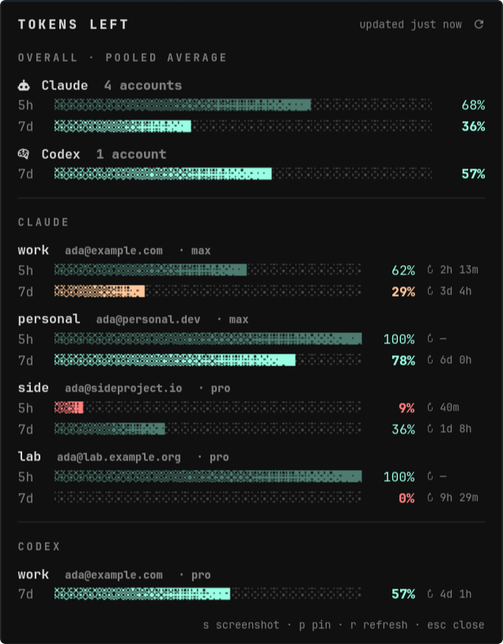

Waybar module · CLIProxyAPI
See the 5-hour and weekly quota left on every Claude and Codex account in CLIProxyAPI, right in your bar. The window that will stop you first is highlighted. Click for a dropdown with dithered meters for each account.

The bar shows how much of your account pool is left, for 5h and 7d. The smaller window is coloured; the other is dimmed.
The panel stays loaded in the background, so a click shows it straight away. It opens under your cursor on the monitor you clicked.
It checks every 5 minutes. One process does the polling and every monitor's bar reads its cache, so there's only one set of API calls.
Requests go through CLIProxyAPI's management api-call proxy, so your OAuth tokens stay on the server.
If a usage endpoint returns a 429, it uses the rate-limit headers from CLIProxyAPI's last request and marks the account as cached.
One file, standard library only. GTK4 and gtk4-layer-shell are only needed for the dropdown, and status works in any terminal.
# from a checkout
git clone https://github.com/claridgicus/how-many-tokens-left
cd how-many-tokens-left
makepkg -si
make install-user # symlinks into ~/.local/bin
how-many-tokens-left status
HMTL_DEMO=1 how-many-tokens-left popover # try the UI with fake data
"custom/tokens": { "exec": "how-many-tokens-left waybar", "return-type": "json", "format": "{}", "on-click": "how-many-tokens-left popover", "on-click-right": "how-many-tokens-left refresh", "on-click-middle": "how-many-tokens-left dashboard" }
You need your plaintext management key (remote-management.secret-key).
Set it in HMTL_MANAGEMENT_KEY, or in
~/.config/how-many-tokens-left/config.toml, or put it in
~/.config/cliproxyapi/management-key.txt.
| % left | 100 − utilisation, for each account and window. An account with no active 5-hour window hasn't used anything in it yet, so it counts as 100%. |
| mean | The default. The average % left across accounts: your pool of capacity. |
| min | The most-drained account. |
| sum | The total % left, e.g. 165% ≈ 1.65 accounts' worth. |
| bold | For each account, its binding limit, min(5h, 7d). |